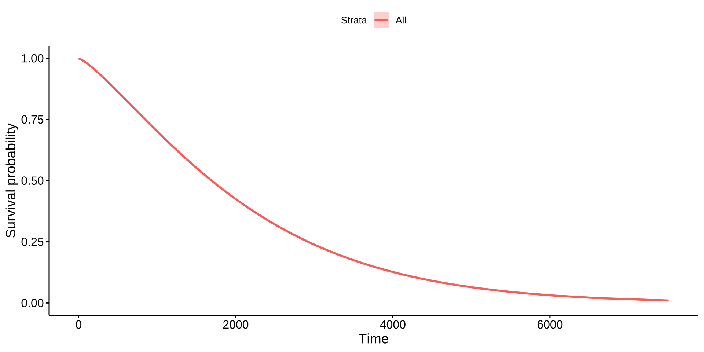
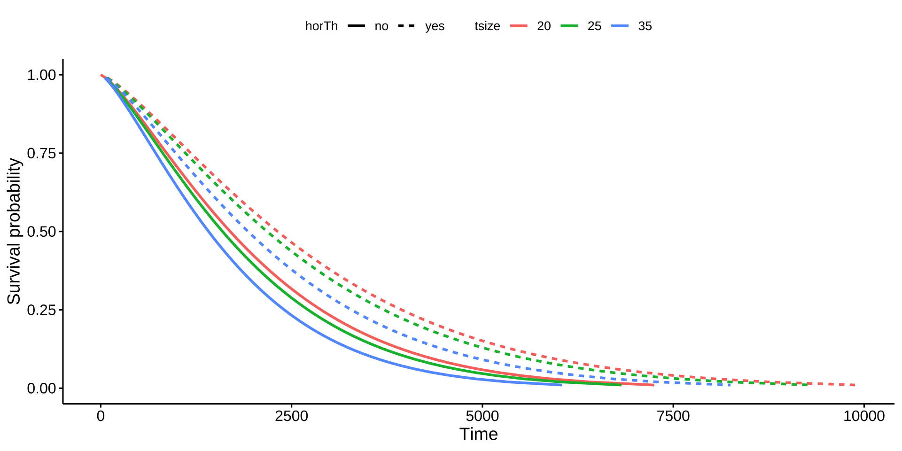

大纲
5.1 AFT模型简介
5.2 Weibull基线生存曲线
5.3 Weibull模型的估计
5.4 Weibull模型的预测
5.1 AFT模型
5.1.1 AFT模型核心思想
加速失效时间模型（Accelerated Failure Time Model，简称AFT模型）是生存分析中的一种统计工具，用于研究某个事件发生所需的时间，例如患者存活时间或设备使用寿命。AFT模型假设外部因素（称为协变量，如治疗、年龄或环境）会“加速”或“减缓”事件发生的时间，类似于给时间轴按下“快进”或“慢放”键。
AFT模型的优势
AFT模型不依赖比例风险假设，而是假设协变量对生存时间的对数具有线性影响，直接建模生存时间的加速或减速效应。因此，AFT模型适用于风险比随时间变化的数据集。
AFT模型是参数模型，允许用户指定生存时间的分布（如Weibull、指数、对数正态、对数逻辑等）。
AFT模型通过完全似然（full likelihood）方法，利用生存时间的分布信息，结合删失数据的特性进行建模。在某些数据集（特别是删失比例不高或分布假设明确时），AFT模型可能提供更精确的参数估计。
应用场景
医疗领域：如果研究某种治疗对患者生存时间的直接延长效果（如延长中位生存时间），AFT模型比CoxPH模型更适合，因为它直接建模生存时间。
工程可靠性：在分析设备失效时间时，如果失效时间的分布已知（如Weibull分布），AFT模型可以通过明确分布假设提供更精确的预测。
非比例风险数据：当数据中存在交互效应或时间依赖的协变量效应时（如某药物的效果随时间减弱），AFT模型比CoxPH模型更灵活。
局限性与权衡 虽然AFT模型在上述场景中有优势，但它也有局限性：
AFT模型需要指定生存时间的分布，如果分布假设错误，可能导致模型拟合不佳。 AFT模型的计算复杂度通常高于CoxPH模型，尤其在大数据集或复杂分布下。 CoxPH模型在处理高维协变量或不需要明确分布假设的场景中可能更稳健。
5.1.2 AFT模型的设定
数学形式为：
\[
\log(T) = \mu + X^\top \beta + \sigma \epsilon
\]
\[ T \] ：生存时间\[ X \] ：协变量向量\[ \beta \] ：回归系数，\(\beta_j\) 代表\(\x_j\) 每增加一个单位，log(T)增加\(\beta_j\) 个单位
当 \[ \beta_j > 0 \] ：协变量 \[ x_j \] 延长生存时间
当 \[ \beta_j < 0 \] ：协变量 \[ x_j \] 缩短生存时间
\[ \epsilon \] ：随机误差项，服从某种分布（决定模型类型）\[ \mu \] ：截距项\[ \sigma \] ：尺度参数
这是一个对数-线性回归模型 ，对数生存时间服从线性模型。
5.1.3 AFT模型：常见的分布类型
Weibull
Extreme value (EV)
Weibull分布
Exponential
Gumbel (固定 scale)
指数分布
Log-normal
正态分布
对数正态分布
Log-logistic
Logistic分布
对数逻辑分布
你可以使用 survreg() 拟合这些模型。
5.1.4 AFT模型： 与Cox比例风险模型的比较
作用方式
建模 \[ \log(T) \]
建模风险函数 \[ h(t|X) \]
参数解释
加速或减缓生存时间的倍数
改变风险函数的比例
分布设定
需要指定误差分布
无需指定（半参数）
拟合方法
极大似然
局部偏似然
可预测生存时间
✅ 是
❌ 否（只能估风险）
5.2 AFT模型语法结构
library (survival)<- survreg (Surv (time, status) ~ age + sex, data = lung, dist = "weibull" )summary (fit_aft)
dist 参数指定分布类型："weibull", "lognormal", "loglogistic" 等。
5.3 应用举例: Weibull模型
虽然 Kaplan-Meier 方法功能强大，使用广泛，但它主要用于描述性分析 。
🟧 局限性：
KM 曲线是阶梯状 ，类似直方图
难以进行协变量调整与推论分析
🟩 Weibull 模型的优势：
提供连续、光滑的生存曲线
类似于用线性模型替代直方图
假设生存时间服从 Weibull 分布，这个假设在许多应用中效果良好
5.3.1 绘制Weibull基线生存曲线
Code
library (TH.data)data ("GBSG2" )# 拟合Weibull分布生存模型（无协变量） <- survreg (Surv (time, cens) ~ 1 , data = GBSG2)# 设置一系列生存概率 <- seq (0.99 , 0.01 , by = - 0.01 )# 计算每个生存概率对应的生存时间 <- predict (wb, type = "quantile" , p = 1 - surv, newdata = data.frame (1 ))# 整理结果为数据框 <- data.frame (time = t, surv = surv)# 查看前几行结果 head (surv_wb)
time surv
1 60.6560 0.99
2 105.0392 0.98
3 145.0723 0.97
4 182.6430 0.96
5 218.5715 0.95
6 253.3125 0.94
Code
# 为可视化准备（添加上下界和标准误占位列，便于ggsurvplot_df绘图） <- data.frame (time = t, surv = surv, upper = NA , lower = NA , std.err = NA )library (survminer)# 绘制基线生存曲线 ggsurvplot_df (fit = surv_wb, surv.geom = geom_line)

5.3.2 估计Weibull 模型
Code
<- survreg (Surv (time, cens) ~ horTh + tsize, data = GBSG2)summary (wbmod)
Call:
survreg(formula = Surv(time, cens) ~ horTh + tsize, data = GBSG2)
Value Std. Error z p
(Intercept) 7.96070 0.10413 76.45 < 2e-16
horThyes 0.31176 0.09602 3.25 0.0012
tsize -0.01218 0.00272 -4.47 7.8e-06
Log(scale) -0.26494 0.04952 -5.35 8.8e-08
Scale= 0.767
Weibull distribution
Loglik(model)= -2623.2 Loglik(intercept only)= -2637.3
Chisq= 28.17 on 2 degrees of freedom, p= 7.6e-07
Number of Newton-Raphson Iterations: 5
n= 686
Weibull模型估计结果解读
\[
\log(T) = 7.96070 + 0.31176 \times \mathrm{horTh(yes)} - 0.01218 \times \mathrm{tsize} + 0.767 \epsilon
\]
其中 \(T\) 为生存时间，\(W\) 服从标准极值型（Gumbel）分布。
激素治疗（horThyes）：
系数 $ _1 = 0.31176 $，加速因子为 $ e^{-_1} = e^{-0.31176} $。 含义：接受激素治疗（horThyes=1）使生存时间延长至未接受治疗（horThyes=0）的 $ e^{0.31176} $ 倍（即延长约36.6%）。
肿瘤大小（tsize）：
系数 $ _2 = -0.01218 $，加速因子为 $ e^{-_2} = e^{0.01218} $。 含义：肿瘤大小每增加 1 毫米，生存时间缩短至原来的 $ e^{-0.01218} $ 倍（即缩短约1.2%）。
Scale=0.767：Weibull分布的形状参数，<1时说明风险随时间增加。
Weibull分布的形状参数shape = 1/scale scale < 1, shape > 1，风险随时间递增 scale > 1, shape < 1，风险随时间递减
5.3.3 从 Weibull 模型中计算生存时间指标
计算中位生存时间（p=0.5）
Code
# 计算tsize的中位数 <- median (GBSG2$ tsize, na.rm = TRUE )# 取激素治疗变量的常见取值，例如 "yes" 或 "no" # 如果你想只看一组（如“yes”），可以写成： <- data.frame (horTh = "yes" , tsize = med_tsize)# 如果想看两组（激素治疗和未治疗）都展示： <- data.frame (horTh = levels (GBSG2$ horTh),tsize = med_tsize
horTh tsize
1 no 25
2 yes 25
Code
# 计算中位生存时间（p=0.5） predict (wbmod, type = "quantile" , p = 0.5 , newdata = your_newdata)
计算分位生存时间
Code
#第25、50、75百分位生存时间 <- c (0.25 , 0.5 , 0.75 )predict (wbmod, type = "quantile" , p = probs, newdata = your_newdata)
[,1] [,2] [,3]
[1,] 812.618 1595.547 2715.660
[2,] 1109.891 2179.232 3709.106
计算特定生存概率下的生存时间
Code
predict (wbmod, type = "quantile" , p = 0.8 , newdata = your_newdata)
5.3.4 绘制不同组别的生存曲线
Code
# 构造不同激素治疗和肿瘤大小组合的虚拟患者数据 <- expand.grid (horTh = levels (GBSG2$ horTh),tsize = quantile (GBSG2$ tsize, probs = c (0.25 , 0.5 , 0.75 )))
horTh tsize
1 no 20
2 yes 20
3 no 25
4 yes 25
5 no 35
6 yes 35
Code
# 生成一组生存概率序列 <- seq (0.99 , 0.01 , by = - 0.01 )# 计算每组组合下的生存时间分位数 <- predict (wbmod, type = "quantile" , p = 1 - surv,newdata = newdat)# 查看t的行列数（组合数 × 生存概率数） dim (t)
Code
# 合并虚拟患者信息和生存时间 <- cbind (newdat, t)
Code
# 转换为长格式，便于绘图 library (reshape2)<- melt (surv_wbmod_wide, id.vars = c ("horTh" , "tsize" ), variable.name = "surv_id" , value.name = "time" )# 根据surv_id添加对应的生存概率 $ surv <- surv[as.numeric (surv_wbmod$ surv_id)]# 增加绘图所需的占位列 c ("upper" , "lower" , "std.err" , "strata" )] <- NA # 查看数据结构 str (surv_wbmod)
'data.frame': 594 obs. of 9 variables:
$ horTh : Factor w/ 2 levels "no","yes": 1 2 1 2 1 2 1 2 1 2 ...
$ tsize : num 20 20 25 25 35 35 20 20 25 25 ...
$ surv_id: Factor w/ 99 levels "1","2","3","4",..: 1 1 1 1 1 1 2 2 2 2 ...
$ time : num 65.9 90 62 84.6 54.9 ...
$ surv : num 0.99 0.99 0.99 0.99 0.99 0.99 0.98 0.98 0.98 0.98 ...
$ upper : logi NA NA NA NA NA NA ...
$ lower : logi NA NA NA NA NA NA ...
$ std.err: logi NA NA NA NA NA NA ...
$ strata : logi NA NA NA NA NA NA ...
Code
# 绘制不同激素治疗和肿瘤大小下的Weibull生存曲线 ggsurvplot_df (surv_wbmod, surv.geom = geom_line,linetype = "horTh" , color = "tsize" , legend.title = NULL )

5.4 其他AFT模型
Code
# 指数模型（Exponential） <- survreg (Surv (time, cens) ~ horTh + tsize, data = GBSG2, dist = "exponential" )summary (fit_exp)
Call:
survreg(formula = Surv(time, cens) ~ horTh + tsize, data = GBSG2,
dist = "exponential")
Value Std. Error z p
(Intercept) 8.16414 0.13052 62.55 < 2e-16
horThyes 0.36130 0.12461 2.90 0.0037
tsize -0.01468 0.00354 -4.15 3.4e-05
Scale fixed at 1
Exponential distribution
Loglik(model)= -2636 Loglik(intercept only)= -2647.8
Chisq= 23.66 on 2 degrees of freedom, p= 7.3e-06
Number of Newton-Raphson Iterations: 4
n= 686
Code
# 对数正态模型（Lognormal） <- survreg (Surv (time, cens) ~ horTh + tsize, data = GBSG2, dist = "lognormal" )summary (fit_lnorm)
Call:
survreg(formula = Surv(time, cens) ~ horTh + tsize, data = GBSG2,
dist = "lognormal")
Value Std. Error z p
(Intercept) 7.70632 0.11862 64.97 < 2e-16
horThyes 0.31527 0.10144 3.11 0.0019
tsize -0.01370 0.00324 -4.23 2.3e-05
Log(scale) 0.07697 0.04472 1.72 0.0852
Scale= 1.08
Log Normal distribution
Loglik(model)= -2605.2 Loglik(intercept only)= -2618.9
Chisq= 27.34 on 2 degrees of freedom, p= 1.2e-06
Number of Newton-Raphson Iterations: 3
n= 686
如何选择？
Exponential（指数模型）
假设风险率（hazard）是恒定的，即事件发生的速率不随时间变化。适合于“记忆无关”的寿命过程，如某些电子零件的寿命。
Weibull（韦布尔模型）
适合于大多数工程、医学寿命数据。
Lognormal（对数正态模型） 事件发生时间的对数服从正态分布。 当生存时间分布右偏、风险率呈现先增后减（非单调）时适用。适合于某些生物学和社会学过程。
检查 $ (T) $ 的分布：
指数分布：$ (T) $ 偏斜，符合极值分布。 Weibull 分布：$ (T) $ 符合极值分布，形状由 $ k = 1/$ 决定。 对数正态分布：$ (T) $ 近似正态分布（对称、钟形）。
拟合三种分布，比较 AIC 或 BIC，选择值最低的模型。
Weibull 分布
风险函数：灵活，可单调递增（$ k > 1 \(）、恒定（\) k = 1 \(，等价于指数分布）或递减（\) k < 1 $），其中 $ k = 1/$ 是形状参数。 数学形式：$ (T) = _0 + _1 X_1 + + _p X_p + $，其中 $ $。 适用场景：风险随时间单调变化，例如老化系统（风险随时间增加）或早期失效较多的系统（风险随时间减少）。 特点：比指数分布更灵活，可通过形状参数 $ k $ 适应多种风险模式。
指数分布 (Exponential)
风险函数：恒定风险（hazard rate），即 $ h(t) = $，事件发生概率不随时间变化。
数学形式：在 AFT 框架下， $ (T) = _0 + _1 X_1 + + _p X_p + $，其中 $ $，尺度参数 $ = 1 $
适用场景：事件发生率随时间保持稳定，例如某些机械系统的随机故障，或某些短期随访研究中事件发生概率不随时间变化的情况
特点：最简单的分布，假设“无记忆性”（memoryless property），即过去的时间不影响未来事件概率。
对数正态分布 (Lognormal)
风险函数：非单调，通常先上升后下降（类似倒 U 形）。 数学形式：$ (T) N(, ^2) $，其中 $ = _0 + _1 X_1 + + _p X_p $，误差项 $ N(0, ^2) $。 适用场景：生存时间呈现偏态分布，事件风险在某一时间段内较高后逐渐下降，例如某些疾病的复发风险或生物学过程（如细胞分裂时间）。 特点：适合生存时间对数呈正态分布的数据，模型结果易于解释为时间的中位数变化。
模型拟合与比较 方法：分别拟合 Exponential、Lognormal 和 Weibull 模型，比较模型拟合优度： 使用 AIC（赤池信息准则） 或 BIC（贝叶斯信息准则）：值越小的模型拟合更优。
选择AIC最低的模型，若差异不大，再结合理论和解释性选择。
df AIC
fit_weibull 4 5254.381
fit_exp 3 5277.940
fit_lnorm 4 5218.431